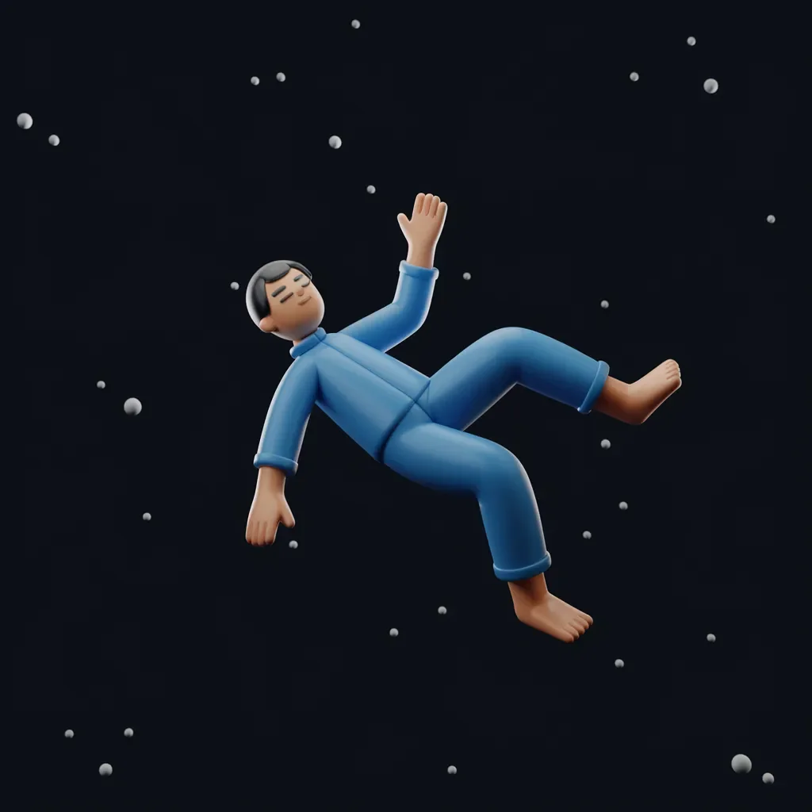

해롤드 핌스는 항상 자신을 실용적인 사람이라고 여겼기 때문에, 지금 끝없는 공허 속으로 떨어지고 있다는 사실을 받아들이기가 너무나 힘들었다. 처음에는 아주 평범하게 시작됐다 - 처마 청소를 하다가 사다리 맨 위에서 발을 헛디딘 것뿐이었다. 하지만 완벽하게 손질된 잔디밭과 아프게 만날 거라는 예상과는 달리, 해롤드는 그저… 계속 떨어지고 있었다.
[Harold Pimms had always considered himself a practical man, which is why he was having such a hard time accepting the fact that he was currently falling through an endless void. It had started innocently enough – a misstep on the top rung of his ladder while cleaning the gutters. But instead of the expected painful meeting with his perfectly manicured lawn, Harold just… kept going.]
“음, 이거 참 불편하군,” 그는 우주 공간에 떠 있는 것처럼 보이는 반쯤 먹다 만 샌드위치를 지나치며 중얼거렸다. 그는 사후 세계를 깨끗이 유지하는 책임을 맡은 우주의 존재에게 항의해야겠다고 마음속으로 메모했다.
[“Well, this is inconvenient,” he muttered to himself as he plummeted past what looked suspiciously like a half-eaten sandwich floating in space. He made a mental note to complain to whatever cosmic entity was in charge of keeping the afterlife tidy.]
떨어지면서 해롤드는 자신의 인생이 눈앞에 스쳐 지나가지 않는다는 것을 알아챘다. 대신, 그는 점점 더 기이해지는 일련의 광고들을 보게 되었는데, 이는 그가 한 번도 들어본 적 없는 제품들이었다. “양자 콧털 다듬는 기계- 당신의 대체 자아들도 깔끔한 콧구멍을 가질 자격이 있으니까요!"라고 한 특히 요란한 간판이 휙 지나가며 선전했다.
[As he fell, Harold couldn’t help but notice that his life wasn’t flashing before his eyes. Instead, he was treated to a series of increasingly bizarre advertisements for products he’d never heard of. "Quantum Nose Hair Trimmers – Because Even Your Alternate Selves Deserve Neat Nostrils!” one particularly garish sign proclaimed as it whizzed by]
해롤드는 한숨을 쉬며 매우 길고 기이한 여정이 될 것 같은 상황을 받아들였다. 그는 적어도 책이라도 가져왔기를 바라며 주머니를 뒤적거렸다. 놀랍게도 그는 “당신의 영원한 낙하가 시작되었습니다: 끝없는 추락을 위한 초보자 가이드"라는 제목의 팸플릿을 발견했다.
[Harold sighed, resigning himself to what was shaping up to be a very long and peculiar journey. He patted his pockets, hoping he’d at least remembered to bring a book. To his surprise, he found a pamphlet titled "So You’ve Started Your Eternal Fall: A Beginner’s Guide to Endless Plummeting.”]
“참 친절하군,” 해롤드는 공허를 계속 돌진하며 팸플릿을 펼치면서 무덤덤하게 말했다. “첫 번째 단계: 당황하지 마세요. 음, 그 배는 이미 떠났군요, 그렇죠?”
[“How thoughtful,” Harold deadpanned, opening the pamphlet as he continued to hurtle through the void. “Step one: Don’t panic. Well, that ship has sailed, hasn’t it?”]
해롤드가 계속 읽어 내려가면서, 그는 이 끝없는 낙하가 일종의 우주적인 농담 같다는 느낌을 떨칠 수 없었다 - 이 필멸의 육체를 벗어나는 특히 길게 늘어진 방식 말이다. 그는 그가 향하는 곳이 어디든 좋은 카이로프랙터가 있기를 바랐다. 영원히 떨어지는 것은 허리 아래쪽에 고문이나 다름없었다.
[As Harold read on, he couldn’t shake the feeling that this endless fall was some sort of cosmic joke – a particularly drawn-out way of shuffling off this mortal coil. He just hoped that wherever he was heading, they had a good chiropractor. Falling for eternity was murder on the lower back]
해롤드가 계속해서 터무니없는 상황 속으로 빠져들면서, 그는 다른 추락자들이 공허 속에서 자신과 합류하고 있음을 알아차리기 시작했다. 두 집 건너에 사는 히긴스보텀 부인이 그녀가 아끼는 페튜니아를 여전히 꼭 쥐고 있었고, 우체국의 핑클스타인 노인은 설명할 수 없게도 바나나 의상을 입고 있었다.
[As Harold continued his descent into the absurd, he began to notice other fallers joining him in the void. There was Mrs. Higginbotham from two doors down, still clutching her prized petunias, and old Mr. Finklestein from the post office, inexplicably wearing a banana costume.]
“오늘같이 좋은 날 떨어지기 딱이죠, 그렇지 않나요?” 히긴스보텀 부인이 마치 우주를 통해 추락하는 게 아니라 이웃 바비큐 파티에서 만난 것처럼 명랑하게 외쳤다.
[“Lovely day for a fall, isn’t it?” Mrs. Higginbotham called out cheerfully, as if they were meeting at a neighborhood barbecue rather than plummeting through the cosmos.]
“그렇죠,” 해롤드가 대답했다. 그의 어머니가 실존적 위기 앞에서도 예의 바르게 행동하도록 그를 키웠기 때문이었다. “혹시 우리가 어디로 향하고 있는지 아시는 분 계신가요?”
[“Quite,” Harold replied, because his mother had raised him to be polite, even in the face of existential crisis. “I don’t suppose either of you knows where we’re headed?”]
핑클스타인 씨가 바나나 모양 후드를 벗으며 말했다. “그곳이 아주 좋은 곳이라고 들었어요. 날씨도 좋고, 세금도 없고, 모든 사람의 양말이 항상 짝이 맞는다더군요.”
[Mr. Finklestein peeled back his banana hood. “I hear it’s a lovely place. Great weather, no taxes, and everyone’s socks always match.”]
해롤드가 마지막 부분의 비현실성을 지적하려던 찰나, 어디서 나는지 모를 우렁찬 목소리가 그의 말을 가로막았다.
[Harold was about to point out the improbability of that last bit when he was interrupted by a booming voice that seemed to come from everywhere and nowhere at once.]
“추락자 여러분 주목해 주십시오! 팔과 다리를 항상 공허 안에 두시기 바랍니다. 멀미를 느끼시는 분들은 제공된 토사물 봉투를 사용하세요. 아, 잠깐, 우리는 그런 걸 제공하지 않네요. 죄송합니다!”
[“ATTENTION FALLERS! Please keep your arms and legs inside the void at all times. Those experiencing motion sickness should use the barf bags provided. Oh wait, we don’t provide those. Sorry about that!”]
마치 신호라도 받은 듯, 얼굴이 초록색으로 변한 양복 차림의 남자가 몹시 아파 보이는 표정으로 휙 지나갔다.
[As if on cue, a green-faced man in a business suit went whizzing past, looking decidedly unwell]
해롤드는 팸플릿을 넘기며 답을 찾았다. “7장: 자유 낙하에서 친구 사귀기. 8장: 무중력 상태에서 뜨개질하기. 아, 여기 있군 - 9장: 낙하가 멈출 때… 예상되는 일들.”
[Harold flipped through his pamphlet, searching for answers. “Chapter 7: Making Friends in Free Fall. Chapter 8: Knitting in Zero Gravity. Ah, here we go – Chapter 9: What to Expect When You’re Expecting… to Stop Falling.”]
그는 목을 가다듬고 소리내어 읽었다. “낙하의 끝은 갑작스러운 정지로 표시될 것입니다. 이 정지는 당신의 업보와 삶에서의 유머 감각에 따라 우스운 ‘철퍽’ 소리를 동반할 수도, 그렇지 않을 수도 있습니다.”
[He cleared his throat and read aloud: “The end of your fall will be marked by a sudden stop. This stop may or may not be accompanied by a comical 'splat’ sound, depending on your karmic balance and sense of humor in life.”]
히긴스보텀 부인은 걱정스러워 보였다. “오 이런, 부드러운 착지를 할 만큼 내가 충분히 선한 사람이었기를 바라요.”
[Mrs. Higginbotham looked concerned. “Oh dear, I hope I’ve been good enough for a soft landing.”]
핑클스타인 씨는 킥킥 웃었다. “난 쿠션 효과를 위해 바나나 옷에 베팅하고 있지. 항상 앞서 계획하는 게 내 모토라고.”
[Mr. Finklestein chuckled. “I’m banking on the banana suit for cushioning. Always plan ahead, that’s my motto.”]
해롤드는 떨어지면서 이것이 우주적인 실수가 아닐까 하는 생각을 떨칠 수 없었다. 분명 죽음이 이렇게… 터무니없을 리가 없었다. 하지만 유령 소 떼가 음매 소리를 내며 지나가는 것을 보면서, 그는 인정할 수밖에 없었다 - 이것이 분명 땅에 묻혀 있는 것보다는 훨씬 더 흥미로웠다.
[As they fell, Harold couldn’t help but wonder if this was some cosmic mix-up. Surely, death wasn’t supposed to be this… ridiculous? But then again, as he watched a herd of spectral cows moo their way past, he had to admit – it was certainly more interesting than pushing up daisies.]
해롤드의 영원한 낙하가 계속되면서, 그는 놀랍도록 쉽게 새로운 현실에 적응하고 있었다. 그는 히긴스보텀 부인과 핑클스타인 씨와 함께 독서 모임을 시작했지만, 그들의 문학 토론은 종종 지나가는 혜성이나 가끔 비명을 지르며 그들의 수직 연옥에 합류하는 새로운 사람들로 인해 중단되곤 했다.
[As Harold’s eternal fall stretched on, he found himself adapting to his new reality with surprising ease. He’d started a book club with Mrs. Higginbotham and Mr. Finklestein, though their literary discussions were often interrupted by passing comets or the occasional screaming newcomer to their vertical purgatory.]
“있잖아요,” 해롤드가 그런 모임 중 하나에서 생각에 잠겨 말했다. “우리가 배고프거나 목마르지 않다는 걸 누구 눈치채셨나요?”
[“I say,” Harold mused during one such meeting, “has anyone else noticed we’re not getting hungry or thirsty?”]
히긴스보텀 부인이 현명하게 고개를 끄덕였다. “오, 그럼요, 그건 죽은 사람의 특권 중 하나예요. 그리고 주차 자리 찾는 걱정을 더 이상 하지 않아도 된다는 것도요.”
[Mrs. Higginbotham nodded sagely. “Oh yes, dear. It’s one of the perks of being dead. That, and never having to worry about finding a parking spot again.”]
해롤드가 그들의 사망 상태에 대해 더 자세히 물으려던 찰나, 그들 앞에 빛나는 표지판이 나타났다. “축하합니다! 당신은 낙하 1,000,000마일에 도달했습니다. 무료 실존적 위기를 즐기세요."라고 쓰여 있었다.
[Just as Harold was about to inquire further about the finer points of their deceased status, a glowing sign appeared before them. It read: "CONGRATULATIONS! You’ve reached the 1,000,000th mile of your fall. Please enjoy this complimentary existential crisis.”]
갑자기 해롤드는 공황 상태에 빠졌다. “오 세상에,” 그가 숨을 헐떡였다. “이게 끝나지 않으면 어쩌지? 우리가 그냥 영원히 떨어지기만 한다면? 이 모든 것의 의미는 뭐지?”
[Suddenly, Harold felt a wave of panic wash over him. “Oh god,” he gasped, “what if this never ends? What if we just keep falling forever? What’s the point of it all?”]
핑클스타인 씨는 여전히 바나나 옷을 입은 채로 해롤드의 어깨를 안심시키듯 토닥였다. “자, 자. 기분이 나아진다면 말씀드리는 건데, 삶도 그런 거였을 거예요. 우리가 세금이나 형편없는 TV 프로그램에 정신이 팔려서 그걸 못 알아챘을 뿐이죠.”
[Mr. Finklestein, still in his banana suit, patted Harold’s shoulder reassuringly. “There, there. If it makes you feel any better, I’m pretty sure that’s what life was all about too. We just didn’t notice because we were distracted by taxes and bad TV shows.”]
마치 그들의 대화에 응답하듯, 또 다른 우렁찬 안내 방송이 공허를 울렸다:
“추락자 여러분 주목해 주십시오! 불편을 끼쳐 죄송합니다만, 사후 세계의 과밀로 인해 저희는 무한 낙하 정책을 시행할 수밖에 없게 되었습니다. 편안히 자리를 잡으시고 기내 엔터테인먼트를 즐겨주시기 바랍니다.”
[As if responding to their conversation, another booming announcement echoed through the void:
“ATTENTION FALLERS! We apologize for the inconvenience, but due to overcrowding in the afterlife, we’ve been forced to implement an endless fall policy. Please make yourselves comfortable and enjoy the in-flight entertainment.”]
작은 화면이 그들 각자 앞에 나타났고, 고양이 동영상의 무한 반복 재생처럼 보이는 것이 표시되었다.
[A small screen materialized in front of each of them, displaying what appeared to be an infinite loop of cat videos]
해롤드는 한숨을 쉬며 자신의 운명을 받아들였다. “음,” 그가 말했다, “영원을 보내는 더 나쁜 방법들도 있겠죠. 적어도 같이 있는 사람들은 나쁘지 않네요.”
[Harold sighed, resigning himself to his fate. “Well,” he said, “I suppose there are worse ways to spend eternity. At least the company’s not bad.”]
히긴스보텀 부인이 환하게 웃었다. “그렇죠, 여러분! 자, '아이 스파이’ 게임 한 판 신나게 할 사람? 제가 먼저 할게요. 제 작은 눈으로 'V'로 시작하는 뭔가를 봤어요.”
[Mrs. Higginbotham beamed. “That’s the spirit, dear! Now, who’s up for a rousing game of 'I Spy’? I’ll go first. I spy with my little eye, something beginning with 'V’.”]
“공허?” 해롤드와 핑클스타인 씨가 동시에 말했다.
[“Void?” Harold and Mr. Finklestein said in unison.]
“오, 당신들 정말 이 게임 잘하시네요!”
[“Oh, you two are good at this!”]
그렇게 그들이 우주의 심연을 끝없이 추락하는 동안, 해롤드는 이것이 어쩌면 삶과 그리 다르지 않다는 것을 깨달았다. 터무니없고, 종종 무의미하며, 가끔은 두렵지만, 우리가 여정에서 만드는 인연들로 인해 견딜 만한 것이었다. 그는 단지 더 편한 신발을 가져왔더라면 하고 바랐다.
[And so, as they continued their never-ending plummet through the cosmic abyss, Harold realized that perhaps this wasn’t so different from life after all. It was absurd, often pointless, occasionally terrifying, but made bearable by the connections we forge along the way. He just wished he’d brought a more comfortable pair of shoes.]
멀리서 초신성이 우주의 불꽃놀이처럼 눈부시게 폭발하는 가운데, 해롤드는 작은 미소를 지었다. 이것이 죽음이라면, 음, 그리 나쁘지 않았다. 적어도 이 낙하는 결코 지루하지 않을 테니까.
[As a distant supernova exploded in a dazzling display of cosmic fireworks, Harold allowed himself a small smile. If this was death, well, it wasn’t half bad. At least the fall would never be boring.]